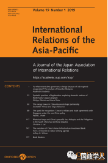

收录于合集

简 介
【作者】 Christina J. Lai：约翰·霍普金斯大学全球安全研究项目助理研究员；曾任普林斯顿大学中国和世界项目的博士后研究员。
【编译】 袁浩延
【审核】 高嘉琳
【来源】
Christina J Lai, Rhetorical traps and China’s peaceful rise: Malaysia and the Philippines in the South China Sea territorial disputes, International Relations of the Asia-Pacific, Volume 19, Issue 1, January 2019, Pages 117–146
【期刊】 《亚太国际关系》(International Relations of the Asia- Pacific)是一份由牛津大学出版社(Oxford University Press)代表日本国际关系协会(Japan Association of International Relations)出版的学术期刊，成立于2001年，每一年出版三期

修辞陷阱与中国的和平崛起： 南海领土争端中的马来西亚和菲律宾
Rhetorical traps and China’s peaceful rise: Malaysia and the Philippines in the South China Sea territorial disputes
内容提要
中国的经济和军事实力在过去三十年中有了显著增长，但东南亚国家在外交政策上对中国的反应却各不相同。本文考察了南海领土争端中中国对马来西亚和菲律宾的保证和安抚战略。报告指出，中国与其邻国互相采取的是“保证与诱捕”战略。中国对这两个国家采用了不同的对外话语来对待它们的关切，它们也积极回应中国的言论。然而，当中国在2010-2013年间表现得更加坚定自信时，他们运用修辞策略来约束中国的对外行为。比较分析表明了它们在领土争端中是如何运用合法化策略的。报告最后提出了前述内容对中美关系的政策意义。

文章导读
1
导论
尽管目前的研究和政策报告注意到了中国在南海争端中的自信，但也有少数人注意到了中国在争端中的变化——中国与声索国论争并对后者予以保证。本研究追溯了在中国和平发展的框架下，中国对马来西亚和菲律宾的言论和行为演变。尽管中国和菲律宾围绕黄岩岛都对对方提出了强烈挑战并相互对抗，但中国和马来西亚表现出了克制，并保证了它们的善意。
详细地说，这项研究表明，从2000年到2016年，两国与中国间的关系是如何变化的。首先，它强调了中国的保证与安抚战略，并概述了中国和平崛起话语的性质。之后，本文研究了中国及其邻国——马来西亚和菲律宾——是如何处理南海领土争端的。最后，本文对中国外交论调的变化和连贯性进行了解释，并对其对未来中美关系的政策含义进行了探讨。
2
马来西亚与菲律宾：海事纠纷的比较研究
在应对崛起的中国时，马来西亚和菲律宾面临着相似的外部约束：强国和弱国之间的权力不对称以及临近的地理位置 ——不可避免地涉及海洋争端。然而，这两个国家在亚洲政治上也有着不同的外交取向。
例如，在海上冲突的紧张局势中，菲律宾提出了一种基于法律的合法化战略，将中国描绘成一个欺凌弱小国家的霸权，并削弱了中国的和平发展话语。尽管菲律宾加强了与中国的经济联系，但美菲间的安全联盟意味着，当美国在东南亚挑起与中国的军事冲突时，美国可能会介入。
另一方面，马来西亚总理纳吉布声称，中马两国在和平与繁荣方面有着相似的愿景和共同价值观。
马、菲两国都没有在他们的任何领土要求上做出妥协。在这一地区背景下，中国如何与马来西亚和菲律宾接触，为研究弱国如何避险和约束强国提供了一个重要案例。
3 ****
中国的保证与安抚策略：一种和平崛起的话语
现实主义认为，当一个崛起的大国实现了物质能力快速增长时，它可能会面临均势再平衡行为。因此，中国希望阻止亚洲国家建立反华联盟。更具体地说，中国应该在对外话语方面付出大量的努力，通过表达中国的和平意图来阻止这种联盟的形成。
3.1 中国的“和平崛起”话语——一种自我约束的承诺
本文认为，来自崛起大国的主要表述可以作为其他国家检验其言论与行为之间一致性的关键指标。更具体地说，中国的“和平崛起”话语创造了一种自我约束的效果，大大增加了任何修正主义行为的成本。中国寻求使其能够专注于经济发展的国际环境，并旨在阻止美国或其他国家利用其优越的物质力量阻止中国的崛起。
3.2 中国“和平崛起”话语的修辞陷阱
现实主义者会辩称，一个修正主义的中国会在口头上安抚邻国，直到中国强大到足以实现其修正主义目标为止。然而，本文表明，东南亚国家并没有忽视中国的言论，而是认真地审视着中国的言论。
本研究表明，通过“修辞诱捕”的过程，中国的和平修辞增加了中国“扩张”的代价。在南海争端中，随着较弱的国家试图推断中国的意图、约束中国的行为，这种保证修辞也成为中国在南海争端中的合法化策略。在这场争端中，中国和所有声索国的合法化策略都围绕着这一主题演变。
**4
**
南海争端中的合法化策略
合法化策略和保证的修辞赋予国家行为意义，进而对外交政策产生影响。理性主义的解释低估了修辞的作用。戈达德 (Goddard)认为，领土在某一时刻可以谈判，在另一时刻则变得不可分割。
本研究以戈达德的杰出成果为基础，对揭示南海领土争端的区域动态提出了不同的观点。无论是某些礁石或岛屿的所有权、航海线的划分，还是自然资源的权利，都取决于中国如何保证其邻国的安全，以及后者在谈判过程中如何证明自己的主张是正当的。此外，中国的和平发展话语通过树立正面形象和塑造邻国的底线期望，为南海领土争端的辩论奠定基础，对其亚洲政策产生了结构性影响。马来西亚和菲律宾的政治领导人用言辞来证明他们对这块有争议领土的要求是正当的，而这些修辞策略可能会在他们的框架内约束甚至困住中国。从这个意义上说，对中国的威胁或其善意的看法是建构而成的，而不仅仅是在亚洲国家之间实行保证和诱捕战略的过程中体现出来。
5 审视中国国家主席习近平的说法：国内与国外
对南海的控制不仅治愈了中国人集体记忆中的情感创伤，而且巩固了中国共产党的执政地位。因此，民族主义话语有时会在中国对领土争端的舆论中浮出水面，但这也要求中国领导人对南海声索国做出坚定的回应。
另一方面，中国领导人积极地发出良性的信息。例如，中国国家主席习近平向亚洲国家和美国保证中国的善意，中国将寻求和平解决争端。
6 南海争端中的中国 马来西亚与菲律宾
国际关系学者指出，中国的自信是一个循序渐进的过程，中国在南海的存在和信心的增加就是这种变化的反映。然而，仔细研究中国的行为和主要声索国的不同反应，就会发现一种更为复杂的动态。尽管从2010年开始，中国与东南亚国家的总体关系肯定遇到了困难，但马来西亚和菲律宾向中国保证并诱使中国承认其主张的方式，表明了亚洲邻国对中国崛起的不同看法。
7 中国与马来西亚
这一部分强调了马来西亚回应中国和平发展的言论如何导致了积极的双边关系。更具体地说，马来西亚积极回应中国在亚洲扮演的角色，双方在地区事务中享有共同的价值观和准则。
7.1 南海争端中马来西亚的保证战略
马来西亚的保证外交在与中国接触时取得了成功。然而，值得注意的是，马来西亚仍然赞成东盟国家在处理领土争端时提出的《南海各方行为准则》。马来西亚和中国都同意在南海问题上解决它们对“核心利益”的关切，并在这一问题上进行合作。
7.2 正向动态的保证策略
中国向马来西亚保证，愿以和平方式解决领土争端，促进和平与稳定。因此，马来西亚对华保证战略是审慎外交的一个很好的范例，因为它避免了明确地与一个更强大的中国对抗。
7.3 南海：从《南海各方行为宣言》到《南海各方行为准则》
马来西亚并没有设置一个修辞陷阱来衡量中国的意图，它的重点是再度保证中国的良性意图。来自马来西亚的隐藏信息是一个温和的提醒，敦促中国保持其作为一个和平崛起国家的长期形象。
7.4 卢科尼亚暗沙事件
尽管双边紧张局势在最近的事件中明显加剧，但马来西亚的政策并没有从根本上打破其对中国的保证战略和自我克制的外交实践。总之，马来西亚的言论体现一种明确的模式，即不把中国视为威胁。
8 中国与菲律宾
到目前（2017年）为止，菲律宾在与中国的领土争端中已使用了外交手段。同时，菲律宾需要与美国保持军事联系，以遏制中国的武断行为。
8.1 中国自2010年开始的武断行为
中国的强硬态度和言论标志着中菲关系发生了重大变化。当阿基诺三世(Aquino III)总统于2010年就职时，中国和菲律宾在南海问题上趋于紧张。华盛顿密切关注领土争端的发展，并回应了菲律宾对中国强硬态度的关切。
8.2 2012 年的黄岩岛事件
当中国和菲律宾派遣海军舰艇靠近黄岩岛时，军事冲突的可能性显著增加。尽管菲律宾越来越意识到中国的威胁，但在可预见的未来，菲律宾在南海维持军事防御的动机和能力仍然薄弱。
8.3 和平崛起的法律层面
菲律宾采取了一种修辞策略，强调一个和平崛起国家所受到的法律约束，这与中国在南海的强硬行为背道而驰。因此，菲律宾享有道德高地，而中国则处境艰难。
8.4 中国对菲律宾提及仲裁案的不予考虑态度
从中国的角度来看，菲律宾单方面的仲裁行动违背了其先前关于通过友好对话解决争端的承诺。中国的立场是：不接受，不参与，不承认，不执行裁决。
9 “修辞陷阱”中的锁定效应
从2009年到2014年，通过中国的对外修辞可以很好地观察到“诱捕”现象。此外，随着时间的推移，中国的保证话语产生了显著的锁定效应，中国的外交政策因其先前对和平崛起的承诺而受到制约。
9.1 中国如何解决修辞陷阱？
表1 修辞陷阱的进程与安抚策略
10 结论
中国的国力正在显著增长，但中国将如何处理南海争端仍是学者和政策制定者争论的问题。更深刻地理解中国对邻国的言辞，也是权力政治不可分割的一部分。菲律宾和马来西亚的修辞策略可以解释亚洲国家对中国崛起的不同反应方式。它不仅显示了东南亚两个国家在应对方面的差异，而且还追溯了不同时期的发展。
对中美关系的意义
亚洲的战略格局在很大程度上取决于中美关系及其在这一领域中相互赋予的修辞框架。美国在亚洲的存在更大程度上可能加深北京方面的怀疑，即遏制一个崛起的中国——这将导致中美之间的激烈竞争。中美关系的发展没有明确的指导方针，但中国无疑仍是美国最具挑战性和最关键的伙伴之一。因此，美国对中国的保证和安抚战略需要精心设计的信号，以同时处理好对中国的关切和亚洲盟友的利益。
本文由国政学人微信公众平台独家首发
** 扫描下方小程序码查看原文p df**
更多阅读
【地区秩序】阿米塔夫·阿查亚：权力转移还是范式变化？中国崛起与亚洲新兴安全秩序 | 国政学人
国政学人 （ID：guozhengxueren)
为方便学人及时阅读高质量文章
别忘把国政学人设置 星标 哦~